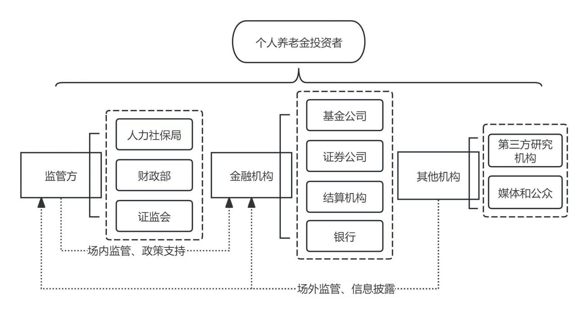
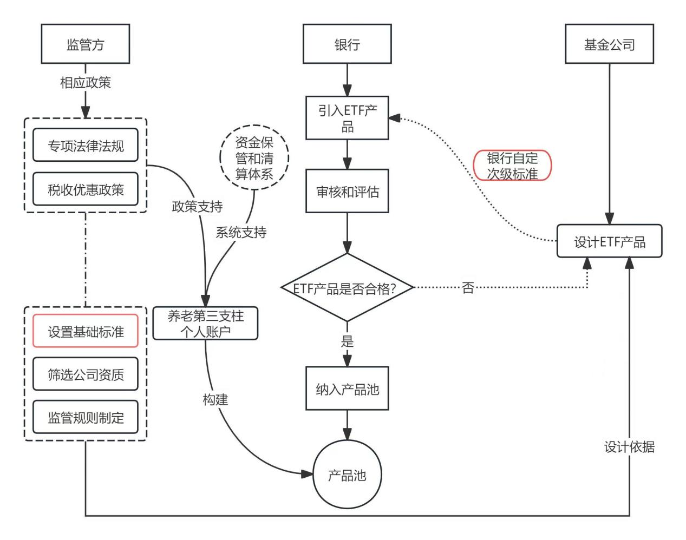
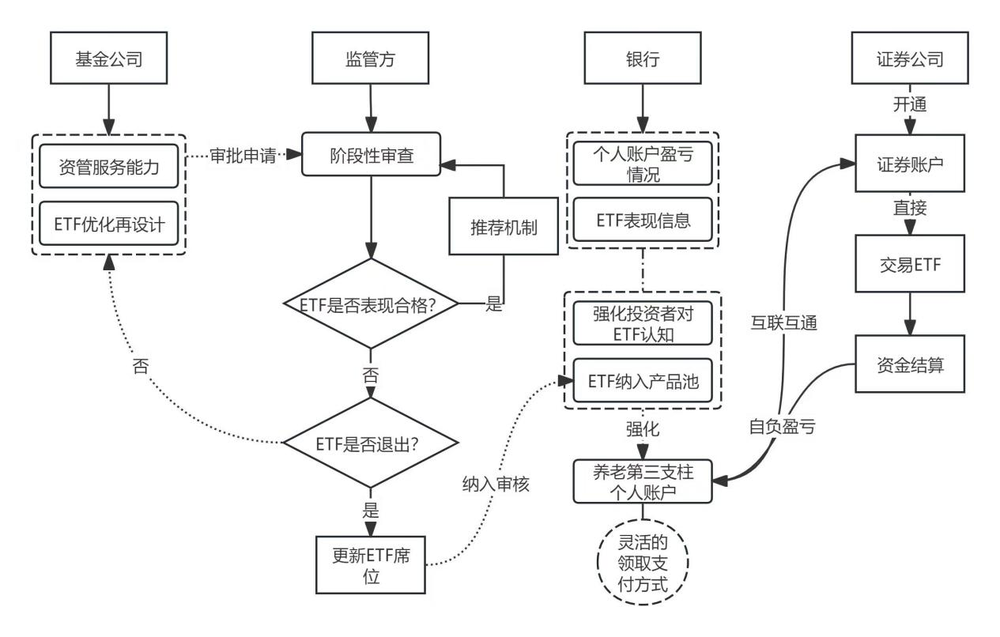

个人养老金账户可投产品已达数百款，但用户的选择困难与信任不足并未因此缓解。 本方案从用户决策路径出发，设计一套「准入 → 分层推荐 → 阶段性审查 → 退出」的完整匹配机制， 并给出多方协同下的职责划分。
个人养老金制度落地后，可投产品数量持续增长。从供给端看相当丰富，但从用户端看， 几个数据同时指向同一个问题：
把这几组数字连起来看：产品不缺（809 款），但规模高度集中在用户最容易理解的储蓄类（68.7%）； 基金类产品中真正被使用的工具占比极低（ETF 持仓 7.756%）；而一旦涉及净值型产品， 收益体验又大幅波动（-5%~5%，甚至出现 -20% 的异常值）。
如果需求端的核心矛盾是"不知道在几百款产品里怎么选、以及选完之后不放心"， 那么单纯增加供给品类（比如把 ETF 纳入可投范围）不但不能解决问题，反而会加剧选择负担。
因此正确的介入点不是"再上架一类产品"，而是建立一套帮用户完成匹配的机制—— 先用明确标准把不合格产品挡在外面，再按用户风险偏好分层推荐，最后通过阶段性审查保证名单不劣化。 本方案设计的正是这套机制。
明确了"卡点在匹配"之后，还需要回答一个前置问题：要扩充的是哪一类资产？ 本方案选择 ETF，不是因为它是热门品种，而是因为它的产品特性与养老资金的长期属性逐条对应。
| 现有方案的错配 | 具体表现 | 对养老资金的影响 |
|---|---|---|
| 配置结构错配 | 账户资产高度集中于储蓄类（占规模 68.7%）；近十年三年期定存利率与通胀率不相上下 | 部分时期面临负实际利率，账户资金购买力逐年缩水，难以实现保值增值 |
| 成本结构错配 | 现有基金类以 FOF 为主，存在子、母基金双重收费 | 费用直接侵蚀净收益，持有期越长侵蚀越明显，与长期持有目标冲突 |
| 产品同质化 | 养老基金产品同质化严重，可选品种有限 | 无法满足不同风险偏好投资者的差异化需求，降低账户吸引力 |
把 ETF 的产品特性与养老资金的要求逐条对照，可以看到它们几乎是同向的：
美国是最早推行个人养老金入市、也是最早将 ETF 作为个人养老金投资资产池的国家。 其第三支柱 IRA 的主要配置方向为共同基金：通过分散风险、平滑波动，既保证了养老金的稳健性， 又让账户享受到股市上涨的红利。
更值得注意的是它的外溢效应：由于养老金投资期限长，长线资金入市后 带动了机构投资者占比上升，市场波动率下降、估值中枢稳定上移—— 这意味着养老资金的引入不仅改善了个人账户的收益，也改变了市场的投资者结构。
我国三支柱体系在制度设计上参考了美国经验，因此 ETF 进入个人养老金投资范围 是可预期的制度演进方向；本方案要解决的是：在这个方向确定的前提下， 进入的门槛与机制应当如何设定。
从用户打开个人养老金账户，到完成一笔配置，需要跨过四个环节。每一环都有明确的流失风险：
四个环节对应三种机制需求：第 1、2 环需要准入筛选与分层推荐（降低选择成本）； 第 3 环需要阶段性审查与信息披露（持续建立信任）； 第 4 环需要退出与替换机制（保证长期体验不劣化）。
机制分三层，分别解决"选什么""推荐给谁""什么时候该退出"。
本页只定义每层要解决什么问题、以及关键的设计取舍； 具体的判定规则与阈值（9 项指标及数值、优先级细则、退出触发条件）全部放在下层文档， 此处引用而不复述——规则只保留一个出处，避免两份文档出现口径差异。
准入层要回答的问题是：面对上千支候选产品，用什么标准判定"合格"？ 本层的输出是一份可解释、可复现的达标名单。
规则本体——规模、流动性、收益、风险、跟踪能力 5 个维度共 9 项指标及其具体阈值—— 定义在下层文档 《准入规则与阈值定义》， 该文档同时给出阈值推导过程与数据口径。
准入门槛有两种做法：给 9 项指标各配权重算综合分，或用分位数阈值逐项判定。 本方案选择后者，因为对面向普通投资者的产品而言，有两个因素比排序精度更重要： 一是权重的正当性——任何权重方案都可能被质疑"凭什么这么配"； 二是结论的可解释性——逐项判定能让每一个被排除的产品都说清"因为哪一项不达标"， 而综合评分只能给出一个总分，无法向用户解释。
通过准入层的产品数量仍然可能超出用户的决策能力，因此需要一个排序与分层规则， 决定先呈现什么、后呈现什么。本层的输出是一套与用户风险偏好匹配的呈现顺序。
结合第三支柱落地初期投资者倾向于低风险产品的特征，呈现顺序按四条优先级依次收敛 （具体规则见下层文档）。这套顺序对应一个明确的产品意图： 让用户在信息最少、判断力最弱的时候，看到的也是相对更稳妥的选项， 而不是把全部产品平铺给他自己挑。
前两层都只解决"进来"的问题。如果缺少退出机制，随着时间推移名单会持续积累表现下滑的产品， 用户的信任也随之流失——这是产品池类机制最容易失效的地方。
本层的输出是一组明确的退出触发条件与长期考核期，使产品池成为可迭代的机制而非一次性名单 （触发条件见下层文档）。 关于"不合格产品如何处理"，见第 4 部分的流程图——其中包含一条从审查退回产品设计的回流路径， 这是保证机制长期有效的关键环节。
上述机制要落地，需要监管方、金融机构、账户服务机构与结算体系协同。以下三张流程图为机制的分工与流转设计：



是"不合格 → 退回优化再设计 → 重新走准入审核"这条回流路径。 它把"产品池"从一次性的静态名单变成了带淘汰与迭代的活机制—— 有回流路径，名单才不会随时间劣化；缺少这条路径，任何准入标准都会在几年内失效。
任何方案都会带来新的问题。ETF 被引入养老金账户后，有两个副作用是可以预见的， 而且它们都源于 ETF 自身的优点——这也是设计时必须一并处理的原因。
ETF 具备 T+0 / T+1 的交易效率，二级市场交易费用低廉、不收取印花税、 分红与差价收入免征所得税——这些特性共同放大了波段操作的相对收益。 账户一旦可以直接交易 ETF，部分投资者很可能把它当作短期择时工具， 这与养老金资金"长期持有"的属性直接冲突。
值得强调的是：这个风险不是产品缺陷，而是产品优点被误用。 因此不能用"取消交易便利性"来应对，只能通过机制与教育加以引导。
个人养老金享有税收减免优惠，这本身是吸引缴存的制度设计。但当"节税"与"ETF 的交易便利性" 叠加时，投资者可能同时追求节税收益与短期价差，为了放大收益而承担超出自身承受能力的风险， 从而忽略养老投资的核心目标——长期稳健增值与养老保障，形成保障性与收益性的倒置。
| 层级 | 应对措施 | 对应解决的问题 |
|---|---|---|
| 规则层 | 优先纳入波动适中、流动性高的宽基类产品，并设置风险等级匹配机制； 在准入与推荐环节就用规则把高波动品种挡在优先位置之外 | 从源头上降低账户持仓的波动暴露 |
| 披露层 | 强化风险披露：明确标注"历史业绩不代表未来收益"， 完整说明指数产品的波动性与跟踪误差等风险特征 | 修正投资者的收益预期，减少因预期错配引发的频繁交易 |
| 教育层 | 普及指数基金基础知识、重点宣导长期投资理念与定投策略， 并提供模拟投资与投顾服务（见 5.4） | 提升自主决策能力，降低因认知不足导致的跟风与短线操作 |
投资者教育不是泛泛的宣传，而是需要明确受众、内容与形式的产品动作：
机制解决的是"产品池里有什么、按什么顺序呈现"，教育解决的是"用户能不能理解并做出合适的选择"。 两者缺一不可：只做机制，用户仍可能因认知不足而误用产品； 只做教育，用户仍要面对数百款产品的选择负担。
本方案是基于公开数据与机制推演的设计稿，其中的用户侧判断尚未经过实测。 要让方案可落地，以下假设必须优先验证：
| 待验证假设 | 验证方式 | 优先级 |
|---|---|---|
| 用户的核心困难是"不会选"，而非"不想投" | 对已开户未持续缴存用户做访谈，区分"不知道选什么"与"不认可制度"（5–8 人深访） | 高 |
| 提供筛选后的短名单能提升配置完成率 | 对同一批用户做 A/B 测试：全量列表 vs 筛选后短名单，对比配置完成率 | 高 |
| 按风险偏好分层推荐优于按收益排序推荐 | 两组推荐策略对比：选择耗时、配置后 30 日留存、是否发生频繁调整 | 中 |
| 短名单的长度存在最优区间 | 测试 10 / 20 / 50 款不同长度下的选择行为差异 | 中 |
| 阶段性审查结果的主动披露能提升信任 | 对比披露与不披露两组用户的次年续缴率 | 中 |
需要明确说明本方案"是什么"与"不是什么"，避免把研究方案误读为已落地的产品：